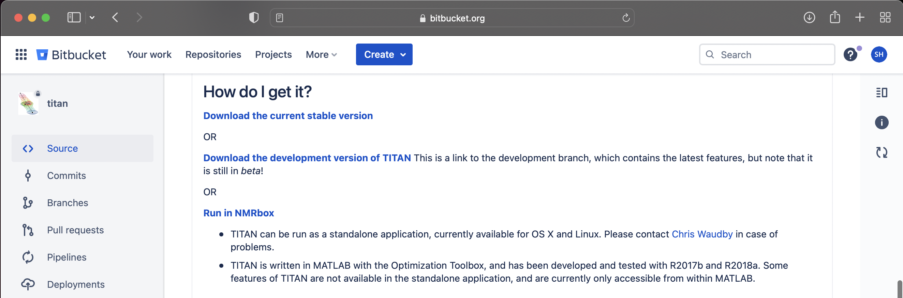

Download
NMR TITAN is available to download, or can be run directly through NMRbox.
Downloading TITAN
- TITAN is free for academic users! Register here to be added to the TITAN user list. Registration is processed manually, so please be patient while an account is created for you.
- Create a Bitbucket account if you do not already have one. Once registered, you will receive an invitation in your inbox to join the TITAN repository on Bitbucket.
-
Sign into Bitbucket and navigate to the TITAN repository.
Scroll down until you reach the "How do I get it?" section.

- Select between two versions of TITAN that are available for download: the stable branch, or the development version. This may contain additional features, but is not guaranteed to be free of bugs!
- Once downloaded, TITAN may be installed as a stand-alone application for Mac or Linux, or can be run directly through MATLAB.
A. Installing TITAN as a stand-alone application
-
Open the folder you have downloaded and locate the installation scripts under "bin".

-
Select the appropriate installer (mac/linux) to install TITAN.
Mac users may need to open the installer by right-clicking to bypass security checks. - Once installed, double click the application icon to launch TITAN.
B. Running TITAN within MATLAB
-
TITAN source code is contained within the
titansubdirectory of the downloaded package. -
The TITAN code must be in a location known to MATLAB. Use
pathtoolto add thetitandirectory to the path, and then close (or save first to make the addition permanent).
-
Start the main TITAN graphical user interface with the command
TITAN.
Have a problem?
Please contact Chris Waudby in case of problems downloading, installing, or running TITAN.